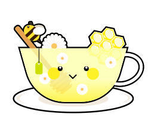

GLASS OF EMOTION
เครื่องดื่มสำหรับใจคุณตอนนี้

ชาคาโมมายล์
ทำไมคุณถึงเหมาะกับ “ชาคาโมมายล์”
ชาคาโมมายล์
-
 ชาคาโมมายล์ ช่วยผ่อนคลายและลดอารมณ์
ชาคาโมมายล์ ช่วยผ่อนคลายและลดอารมณ์
ด้านลบ -
สารบิซาโบโลลและบิซาโบโลลออกไซด์ ช่วยในการบรรเทาความเครียด ความวิตกกังวล และความไม่สบายใจ
-
ระบบประสาทสงบลง อารมณ์ผ่อนคลายอย่างเป็นธรรมชาติ
ท็อปปิงเพื่อดูแลใจ
น้ำผึ้ง
-
เมื่อรู้สึกไร้ค่า สมองมัก “คิดวนซ้ำ” เพราะระบบประสาทตื่นตัวมากเกินไป
-
สารอะพิเจนิน จับกับตัวรับในสมอง ทำหน้าที่เหมือนปุ่มลดเสียงความกังวล ช่วยให้เสียงตำหนิตัวเองเบาลง
-
ช่วยสร้างเซโรโทนิน ลดความเครียดและปรับอารมณ์ให้สมดุล กลับมาเห็นคุณค่าของตัวเองได้ชัดขึ้น
ข้อควรระวัง !
ผู้ที่มีประวัติการแพ้พืชใน วงศ์แอสเตอร์ เช่น ดอกเบญจมาศ หรือดอกเดซี่ ควรระมัดระวังเป็นพิเศษเนื่องจากอาจเกิดปฏิกิริยาแพ้ข้ามสายพันธุ์ได้

สำรวจความรู้สึกของคุณกัน!
ชั้นความรู้สึกของคุณ
รู้สึกกลัว
ต่อสิ่งที่รู้สึกว่าอันตรายหรือคุกคาม ทำให้คุณตื่นตัว
อยากถอยหรืออยากหนี
อยากถอยหรืออยากหนี
รู้สึกอ่อนแอ
ความรู้สึกไร้พลัง ไม่รู้จะรับมือยังไง
รู้สึกไร้คุณค่า
เหมือนไม่สำคัญ
มักเกี่ยวข้องกับความ
ไม่เพียงพอและการดูถูก
ตัวเอง
รู้สึกไม่มีความหมาย
ราวกับการกระทำ
หรือการมีอยู่ของคุณ
เล็กน้อยและไม่มีใครเห็น
วิธีรับมือและโอบกอดความรู้สึกนี้
- อยู่กับปัจจุบันโดยไม่ตัดสินความคิดหรือความรู้สึกของตัวเอง
- หายใจเข้าลึก ๆ พูดคุยกับตัวเองดี ๆ (positive self-talk)
- พักสักครู่ ไม่ต้องรีบทำทุกอย่างคนเดียว ขอความช่วยเหลือได้นะ
- ฝึกเปลี่ยนมุมมองลบให้เป็นความคิดที่อ่อนโยนกับตัวเองมากขึ้น
“Nothing in life is to be feared, it is only to be understood. Now is the time to understand more, so that we may fear less.” - Marie Curie